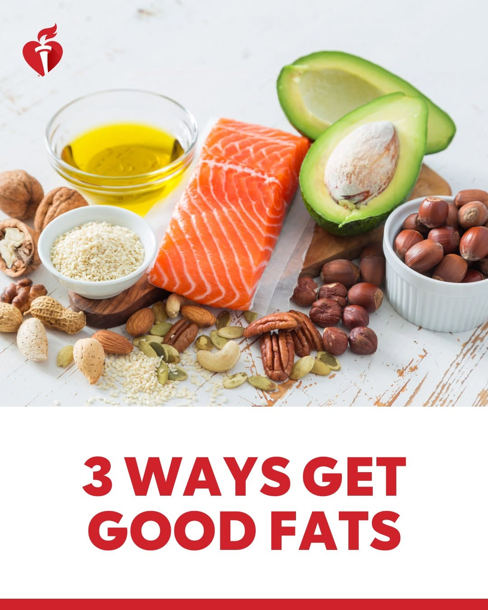

One avocado a week linked to 16% lower CVD and 21% lower CHD over 30 years
Harvard cohort data from about 110,000 people found weekly avocado eaters had lower cardiovascular and coronary heart disease risk than rare or non-eaters.
13 posts
Harvard cohort data from about 110,000 people found weekly avocado eaters had lower cardiovascular and coronary heart disease risk than rare or non-eaters.

Louis shares a graph of foods' LDL effects serving-for-serving against a typical Western diet baseline, e.g. almonds lower LDL and sugar raises it. Excess calories raise LDL regardless.
A video shows Caldwell Esselstyn and family eating guacamole. Louis says many studies show frequent avocado eating lowers heart disease risk and likely increases lifespan, but cites no specific study.
Louis links a New York Times piece on whether saturated fat is actually good for you, after Robert F. Kennedy Jr. signaled a shift in dietary advice. His short answer is to replace saturated fat with unsaturated fats from olive oil, nuts, seeds and avocados, noting fermented dairy may blunt saturated fat's effects but this is still debated.
A video commentary arguing that the meal shown contains more fat than a traditional Mediterranean diet and that dietary unsaturated fat may help explain these physicians' health. No study is cited.
A randomized trial found adding avocado and mango to the diet raised flow-mediated dilation to 6.7% while it fell to 4.6% in controls, with lower diastolic BP and some improvement in eGFR.

A Washington Post interview with Harvard nutrition researcher Walter Willett. He says his group's data showed total fat was irrelevant, trans fats were bad, saturated fat versus refined carbohydrate was only weakly related to heart disease, and unsaturated fats were linked to lower heart disease and mortality. He also describes his own diet, including oats, nuts, blueberries and a plant-based lunch.
Quoted explainer addressing the claim that oils are harmful on a whole-food plant-based diet, using substitution analyses. Replacing saturated fat with polyunsaturated fat (oils, nuts, seeds) lowered CHD risk, and olive oil substituted for vegetable oils gave similar outcomes; avocado data from the NHS/HPFS are also cited.

Louis shares an American Heart Association post noting that unsaturated fats found in avocado, fish and nuts can help lower LDL and triglycerides. It is a brief public-health message without study detail.
Louis shares a rodent study in which extra-virgin avocado oil improved memory, hippocampal biochemistry and oxidative stress in a rat Alzheimer's model. He notes avocado oil is rarely studied and that rodent Alzheimer's models often fail to predict human results.
Louis quotes a UCSF-led study of nearly 4,600 men with non-metastatic prostate cancer. Substituting healthy vegetable fats (olive and canola oil, nuts, seeds, avocado) for carbohydrates or animal fats was associated with lower lethal prostate cancer and all-cause mortality. The study adjusted for age, treatment, BMI, smoking, exercise and other factors.
Louis shares a video listing potassium-rich foods that may support healthy blood pressure: white beans, baked potatoes with skin, Swiss chard, cooked spinach and avocado. He adds tomato sauce, tomato juice and sweet potatoes.
Shares an HKUMed report that oleic acid (olive oil, avocado, nuts) enhances immune-cell cancer fighting, with the admin suggesting more oleic acid and less palmitic acid (processed foods, palm oil, fatty meats) for cancer patients. Details of the study are not given.